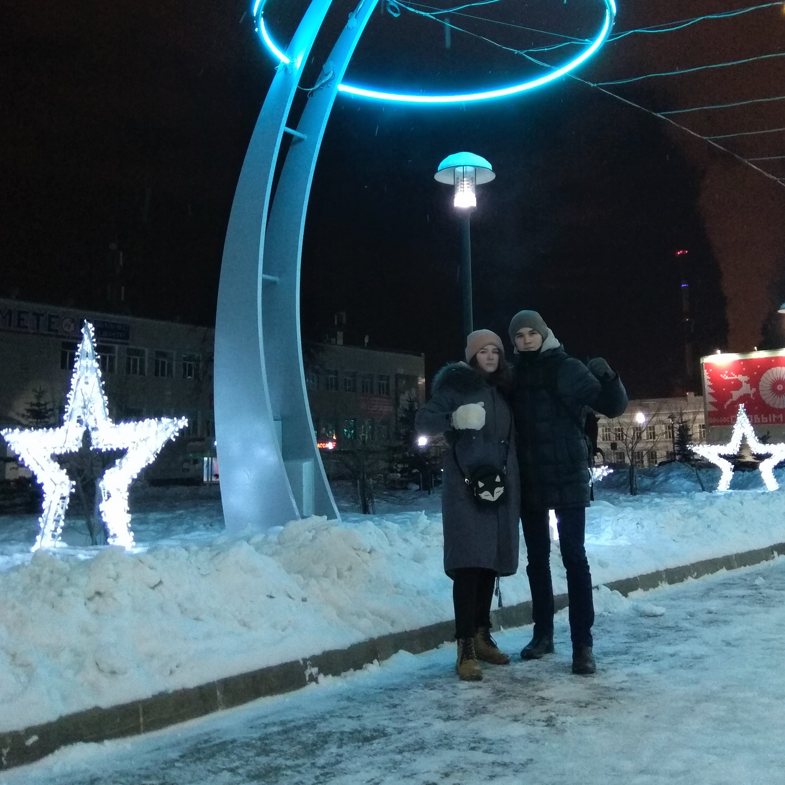
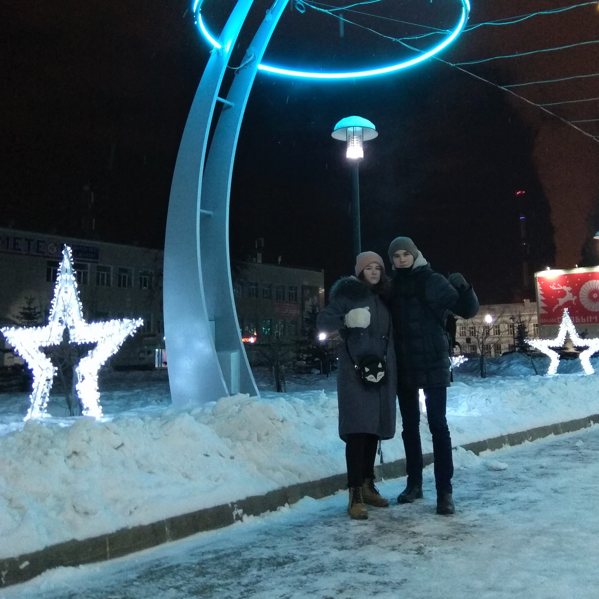
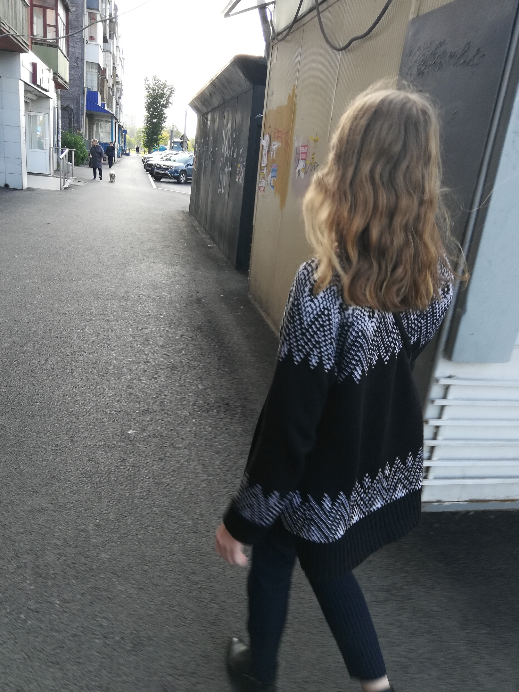

Введение
Эта история началась 5 месяцев назад... Мы виделись с Даяной почти каждый день, это уже стало так привычно и обыденно, что я и предположить не могла, что в тот день, 12 сентября, наша прогулка изменит мою жизнь к лучшему. Видимо, мне было очень скучно, не хватило разговора с ментами прошлой ночью, раз я согласилась ехать к ней и знакомиться с Ромой. Когда я сидела у вас, мне написала Катя и я в шутку сказала ей, что знакомлюсь с молодым человеком... Тогда я не представляла, что все и правда окажется так. Если честно, я мало кого выделяла кроме Ромы и источника сигарет в образе Данила. В целом сложилось хорошее впечатление, ваши отношения выглядели дружескими, мне было весело и интересно проводить с вами время, хотелось ещё. Я была удивлена, когда 13 сентября ты добавился ко мне. По правде говоря, я уже смутно помнила, как ты выглядишь, ещё и ни одной фотки в ВК и ни одной нормальной в Инстаграме. Зато я точно понимала, что ты нормальный, потому что ты не Рома, уж в этом я была уверена. Я с радостью добавила, мне хотелось обзавестись новыми знакомыми, тем более такими, как вы.